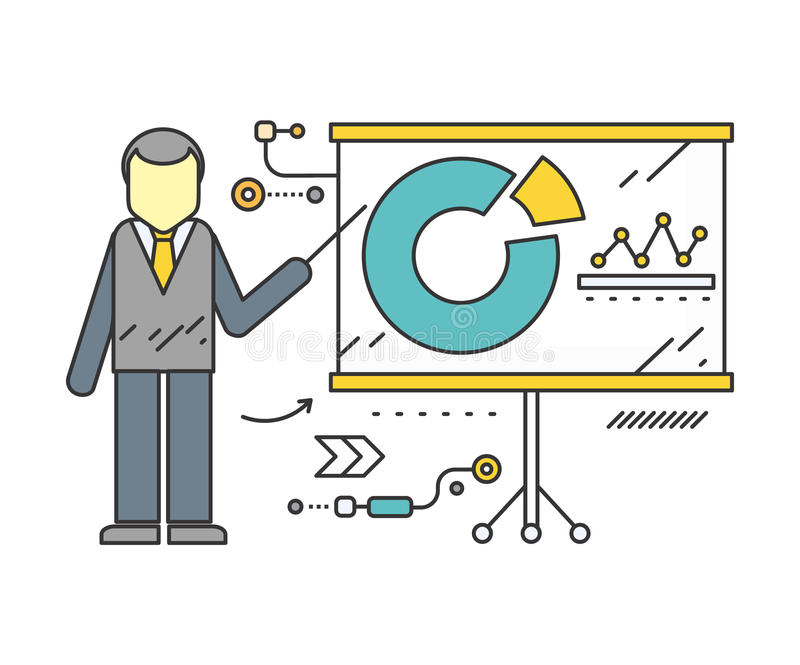
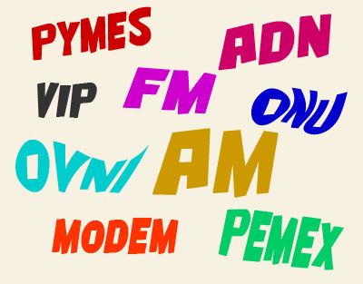
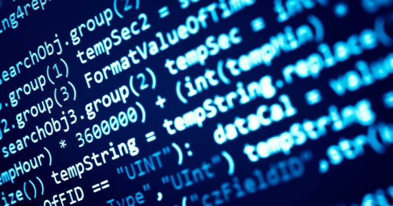

La conexión es la relación física o lógica que se establece entre dos o más sistemas, dispositivos o componentes. Esta puede permitir el intercambio de datos, la comunicación directa entre dispositivos, o la interacción entre usuarios y sistemas, garantizando que los elementos involucrados puedan intercambiar información y trabajar juntos para cumplir una función específica.
A continuación encontrarás las definiciones de las principales palabras y expresiones relacionadas con la asignatura de glosario pensamiento algorítmico
Conexión
Parámetro
Un parámetro es una variable o valor que se utiliza dentro de un sistema, fórmula o función para modificar o influir en el comportamiento o resultado de una operación. En un programa, los parámetros se pasan a funciones o algoritmos y permiten personalizar su ejecución, mientras que en sistemas técnicos, los parámetros definen las condiciones bajo las cuales el sistema opera, como la temperatura, presión o velocidad.
Software
El software es un conjunto de programas, aplicaciones y procedimientos que permiten a una computadora o dispositivo realizar tareas específicas, desde procesar datos hasta ejecutar comandos complejos. Abarca desde sistemas operativos que gestionan los recursos de hardware, hasta aplicaciones especializadas que permiten realizar funciones como procesamiento de texto, diseño gráfico, análisis de datos, o la automatización de procesos industriales.

Sigla
Una sigla es una forma abreviada de una o varias palabras, creada utilizando las primeras letras de una serie de términos, con el objetivo de facilitar su referencia o escritura. Las siglas se utilizan comúnmente en diversos campos como la ciencia, tecnología, política, y educación, y suelen ser una herramienta útil para simplificar la comunicación de términos complejos o de uso frecuente.
Algoritmo
Un algoritmo es una secuencia de pasos o instrucciones bien definidos que se siguen para realizar una tarea o resolver un problema de forma estructurada y eficiente. Los algoritmos son fundamentales en la programación de computadoras, ya que permiten la ejecución de operaciones matemáticas, la toma de decisiones lógicas y la manipulación de datos. Pueden ser representados de diversas formas, como en diagramas de flujo, pseudocódigo, o lenguajes de programación.
